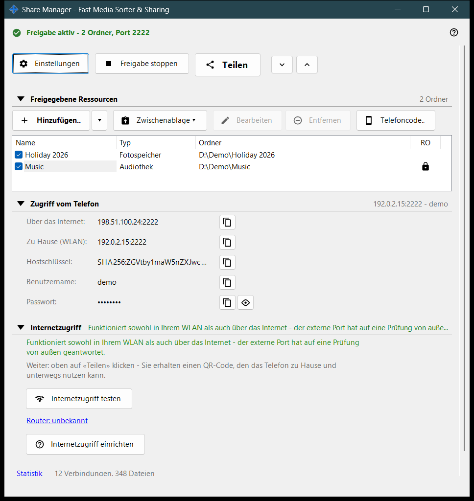
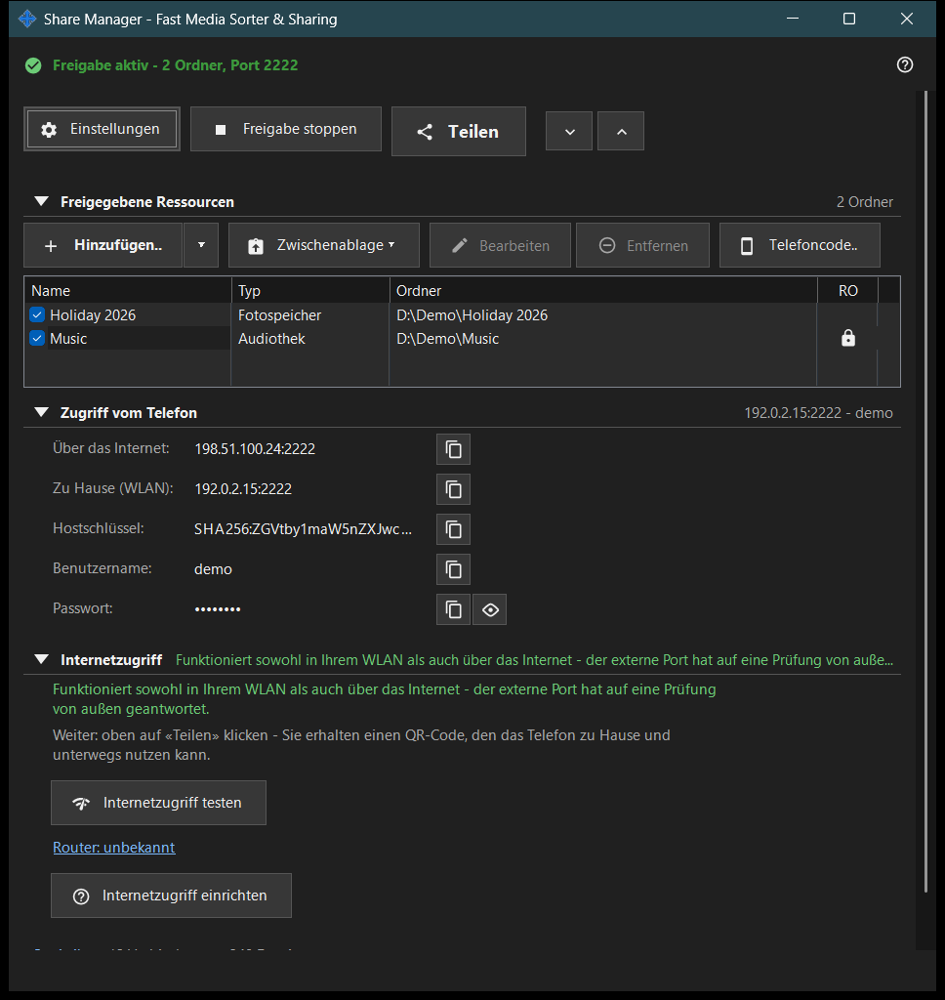

Share Manager - Fast Media Sorter & Sharing
Verwendungszweck
Das Hauptfenster des Share Managers: ein lokaler Freigabedienst, der auch geplante Dateivorgänge ausführt. Es listet die Ordner auf, die dieser PC per SFTP für ein Telefon freigibt, startet und beendet die Freigabe, gibt den Zugangscode aus und zeigt, wie das Telefon den PC erreichen kann. Geplante Dateivorgänge laufen auch ohne Ordnerfreigabe: Sie haben ein eigenes Fenster, das sich über das Tray-Menü oder das Ordnermenü des Viewers öffnet; ihre Seite und die des Austauschkontos finden Sie außerdem in den Einstellungen des Managers. Es öffnet sich aus dem Viewer oder über das Tray-Symbol; beim Schließen des Fensters bleibt die App im Tray.


In dieser Reihenfolge
- Drücken Sie «Hinzufügen..» und wählen Sie «Ordner..», um einen Ordner in die Liste aufzunehmen.
- Setzen Sie beim Ordner ein Häkchen: Nur Ordner mit Häkchen werden bereitgestellt.
- Drücken Sie «Freigabe starten» (mindestens ein Ordner muss ein Häkchen haben).
- Drücken Sie «Teilen», um den QR-Code oder die .fmscfg-Datei für das Telefon zu erhalten.
- Für den Zugriff von außerhalb Ihres Heimnetzes öffnen Sie die Gruppe «Internetzugriff» und nutzen deren zwei Schaltflächen.
- Drücken Sie «Freigabe stoppen», wenn Sie fertig sind.
Die Elemente
Obere Zeile
«Einstellungen» öffnet die Einstellungen des Managers. «Freigabe starten» wird zu «Freigabe stoppen», solange der Server läuft. «Teilen» öffnet den Assistenten für den Zugangscode und funktioniert nur, solange die Freigabe läuft; sonst weist der Hinweis darauf hin, zuerst den Server zu starten. «Alle aufklappen» und «Alle zuklappen» öffnen bzw. schließen die Gruppen darunter.
Freigegebene Ressourcen
Eine Zeile pro Ressource mit einem Kontrollkästchen und den Spalten Name, Typ und Ordner. Eine Zeile mit Häkchen wird den Telefonen bereitgestellt; bei leerer Liste steht dort «Erste Ressource hinzufügen..». Wenn Sie das Häkchen beim letzten markierten Ordner entfernen, fragt das Fenster, ob die Freigabe beendet werden soll, denn verbundene Telefone werden getrennt. Wer die Freigabe ohne markierten Ordner startet, sieht nur den Hinweis «Fügen Sie zuerst einen Ordner hinzu und setzen Sie das Häkchen.».
Zugriff vom Telefon
Die Verbindungsdaten, die ein Telefon oder ein beliebiger SFTP-Client braucht: die Adresse über das Internet und zu Hause (WLAN), IPv6, der Hostschlüssel, der Benutzername und das Kennwort. «Passwort anzeigen» zeigt das Kennwort an, «Passwort verbergen» verbirgt es wieder. Der Text unter der Gruppe erklärt, ob das Telefon den PC nur zu Hause oder auch von außerhalb erreicht.
Zugriff aus dem Internet
«Internetzugriff testen» öffnet das Fenster für den Internetzugriffstest. «Internetzugriff einrichten» öffnet die Router-Anleitung. Der Link «Router: ..» öffnet die eigene Seite des Routers; ohne gefundenen Router lautet er «Router: unbekannt». Die Gruppe enthält eine Warnung: Wer Adresse, Benutzername und Kennwort erfährt, kann alle freigegebenen Ordner erreichen. Veröffentlichen Sie daher weder den QR-Code noch die .fmscfg-Datei und schalten Sie die Freigabe aus, wenn Sie fertig sind.
Statistik
Unter den Gruppen steht neben einer kurzen Zusammenfassung wie «N Verbindungen, M Dateien» der Link «Statistik». Der Link öffnet das Fenster Freigabestatus mit den vollständigen Zählern.
Wenn die Serverfunktionen aus sind
Solange die Serverkomponente nicht aktiviert ist, zeigt das Fenster «Serverfunktionen sind aus» und die Schaltfläche «Serverfunktionen aktivieren..», die das Fenster «Ordnerfreigabe aktivieren» öffnet. Fehlt die Freigabekomponente in der Installation, meldet das Fenster dies und bittet, die App neu zu installieren.
Managereinstellungen · SFTP-Freigabeeinstellungen · Einstellungen des Austauschservers